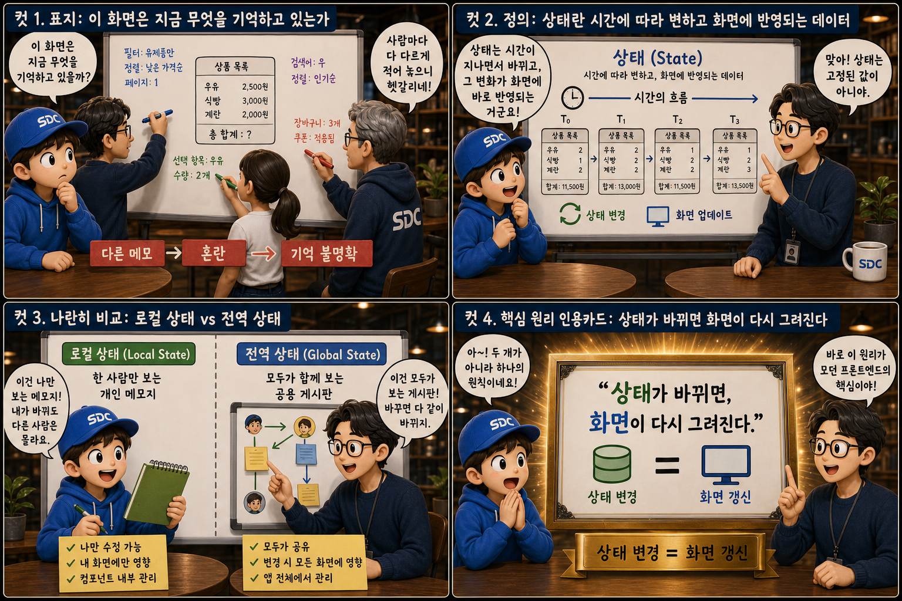
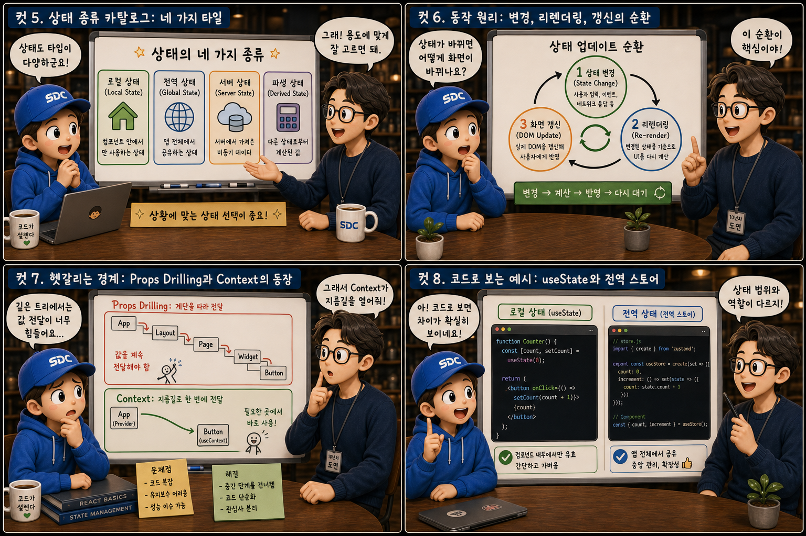
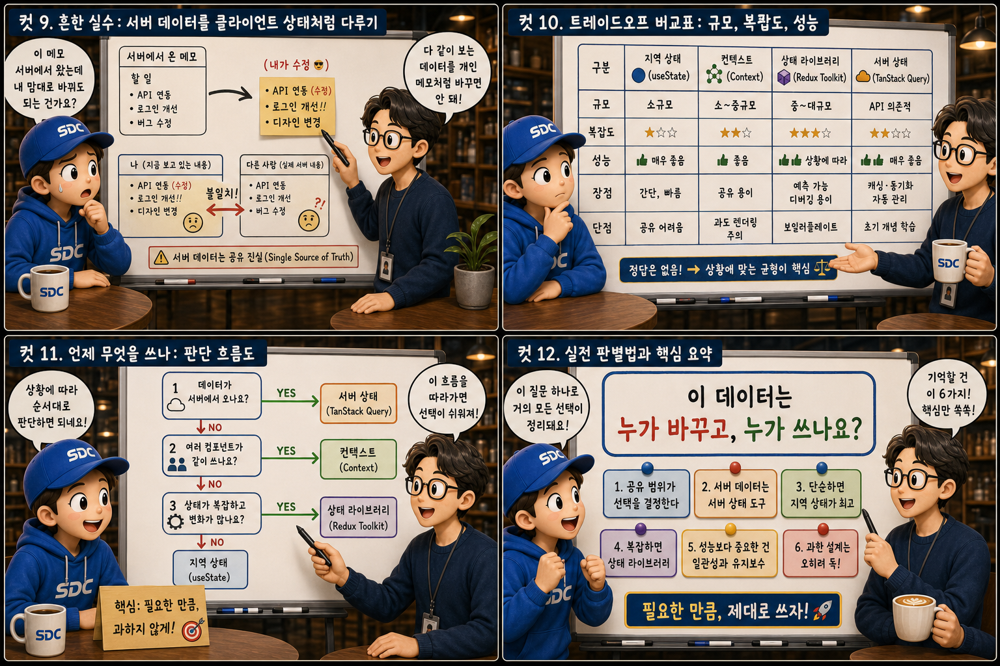

여러 사람이 함께 쓰는 회의실 ‘화이트보드’에 비유해, 화면의 기억을 누가 책임지는지 12컷으로 풀어봅니다.
Local StatevsGlobal State
지금 보고 있는 화면은 생각보다 많은 것을 기억하고 있습니다. 입력창에 무엇이 쳐졌는지, 로그인한 사용자가 누구인지, 모달이 열려 있는지 — 이 모든 기억이 상태(state)입니다. 그런데 같은 화이트보드 앞에 선 여러 사람이 각자 다른 색 펜으로 제멋대로 메모를 남기면 “이게 뭐였지?” 하는 혼란이 생기듯, 화면도 지금 어떤 값을 기억하고 있는지 명확하지 않으면 금세 뒤엉킵니다. 이 글에서는 한 사람만 보는 개인 메모지(로컬 상태)와 모두가 함께 보는 공용 게시판(전역 상태)이 공존하는 회의실 화이트보드 하나에 비유해, 그 기억을 누가, 어떻게, 어디까지 책임지고 관리해야 하는지를 하나씩 살펴봅니다.
PART 1 / 3 — 상태라는 기억의 발견 (컷 01–04)

fourcut-01 — 컷 01 ~ 04
컷 01
이 화면은 지금 무엇을 기억하고 있는가
지금 이 순간 화면이 어떤 값을 기억하고 있는지 명확하지 않으면 혼란이 생긴다.
넓은 화이트보드 앞에 세 사람이 서 있습니다. 한 사람은 티얼색 마카로 작은 메모를, 다른 한 사람은 보라색 마카로 보드 중앙에 큼직한 메모를 남기고, 세 번째 사람은 지우개를 든 채 뒤엉킨 화살표들을 어리둥절하게 바라봅니다. 화면도 똑같습니다. 입력창에 무엇이 쓰였는지, 로그인한 사용자가 누구인지, 모달이 열려 있는지 닫혀 있는지 — 이 모든 것이 상태이고, 이 기억이 정리되지 않으면 화면 위의 메모들처럼 서로 겹치고 어긋나기 시작합니다.
컷 02
정의부터 명확히: 상태란 무엇인가
상태는 시간에 따라 변하고, 그 변화가 즉시 화면에 드러나야 하는 데이터다.
화이트보드의 메모 카드에 0이 쓰이고, 지우개로 지워진 자리에 1이, 다시 2가 쓰입니다. 시간 t0 → t1 → t2를 따라 값이 바뀔 때마다 옆에 그려진 모니터 화면도 함께 바뀝니다. 상태란 이렇게 시간에 따라 변할 수 있고, 그 변화가 화면에 그대로 반영되어야 하는 데이터입니다. 버튼을 몇 번 눌렀는지, 장바구니에 상품이 몇 개 담겼는지 같은 값이 모두 상태입니다. 값이 바뀌었는데 화면이 그대로라면, 그것은 상태 관리가 제대로 되지 않았다는 신호입니다.
컷 03
나란히 비교: 개인 메모지와 공용 게시판
로컬 상태는 한 컴포넌트만 알면 되는 값, 전역 상태는 여러 컴포넌트가 함께 공유하는 값이다.
화이트보드를 세로로 반 나눠 봅시다. 왼쪽에는 티얼색 테두리의 작은 포스트잇 한 장 — “입력창 텍스트: 'hell'” — 을 한 사람만 들여다보고 있습니다. 오른쪽에는 보라색 테두리의 큼직한 게시판 — “로그인 사용자: 홍길동” — 을 세 사람이 둘러서서 동시에 바라봅니다. 로컬 상태(local state)는 하나의 컴포넌트만 알고 있으면 되는 값입니다. 입력창에 지금 무슨 글자가 쳐졌는지는 그 입력창 컴포넌트만 알면 충분합니다. 반면 전역 상태(global state)는 헤더, 프로필 페이지, 장바구니 등 앱 곳곳에서 동시에 필요한 값이라, 한 곳에서 관리하고 모두가 함께 바라봐야 합니다.
컷 04
핵심 원리: 액자에 담아 걸어둘 한 문장
상태 변경과 화면 갱신은 분리된 두 사건이 아니라 하나의 원칙으로 묶여 있다.
STATE
상태가 바뀌면,
RE-RENDER
화면이 다시 그려진다
core principle
이것이 현대 프론트엔드 프레임워크가 동작하는 가장 기본적인 원리입니다. 개발자가 화면의 각 요소를 하나씩 직접 갱신하지 않아도, 상태 값만 바꾸면 프레임워크가 알아서 화면을 최신 상태와 일치하도록 다시 그려줍니다(리렌더링, re-render). 이 원리를 이해하면 “상태를 어디에 두는가”가 왜 그토록 중요한 설계 결정인지 알 수 있습니다.
PART 2 / 3 — 상태의 종류와 동작 원리 (컷 05–08)

fourcut-02 — 컷 05 ~ 08
컷 05
상태 종류 카탈로그: 네 가지 타일
같은 ‘상태’라는 이름, 다른 성격 — 종류가 다르면 관리 방식도 달라야 한다.
화이트보드에 자석으로 고정된 네 개의 타일이 나란히 붙어 있습니다. 모달의 열림/닫힘 같은 UI 상태, API로 가져온 데이터인 서버 상태, 입력값과 유효성 검증 결과인 폼 상태, 주소창의 검색어나 페이지 번호인 URL 상태. 상태는 한 가지 모습이 아닙니다. 이 네 가지는 성격이 서로 달라서, 저장 위치와 관리 방식도 각각 다르게 설계해야 합니다. 예를 들어 서버 상태는 언제든 낡을 수 있는 값이고, URL 상태는 새로고침이나 링크 공유에도 살아남아야 하는 값입니다.
컷 06
동작 원리: 변경, 리렌더링, 갱신의 순환
상태 변경 → 리렌더링 트리거 → 화면 갱신. 이 순환이 밀리초 단위로 끊임없이 반복된다.
사용자 클릭→상태 변경→리렌더링 트리거→화면 다시 계산→화면 갱신→다음 클릭…
사용자가 버튼을 클릭하면 상태가 변경되고, 그 변경은 프레임워크에게 리렌더링이 필요하다는 신호를 보냅니다. 프레임워크는 바뀐 상태를 기준으로 화면을 다시 계산해, 실제로 달라진 부분만 갱신합니다. 화이트보드 위에 티얼에서 보라로 색이 번져가는 원형 화살표처럼, 변경 · 트리거 · 갱신의 세 단계는 사용자가 인지하지 못할 만큼 짧은 시간 안에 순환하며 반복됩니다.
컷 07
헷갈리는 경계: 값은 어떻게 멀리 전달되는가
Props Drilling은 계단을 한 칸씩 내려가는 전달, Context와 전역 스토어는 계단을 관통하는 파이프다.
화이트보드 왼쪽에는 4단 계단이 그려져 있습니다. 맨 위의 부모 컴포넌트가 든 값 카드가 손에서 손으로, 두 번째와 세 번째 상자를 거쳐 맨 아래 손자 컴포넌트에 겨우 도착합니다. 중간 상자들 옆에는 땀방울이 맺혀 있습니다 — 자기는 쓰지도 않는 값을 받아서 넘겨주기만 해야 하는 이 번거로운 상황을 Props Drilling이라고 부릅니다. 보드 오른쪽에는 계단을 통째로 관통하는 굵은 보라색 파이프가 있습니다. Context나 전역 스토어는 이렇게 계단을 건너뛰어, 값이 필요한 컴포넌트가 직접 꺼내 쓸 수 있는 파이프를 놓아주는 역할을 합니다.
컷 08
코드로 보는 차이: 포스트잇과 게시판의 코드
로컬 상태는 컴포넌트 안에서만 존재하고, 전역 스토어는 여러 컴포넌트가 구독해서 공유한다.
로컬 상태 — 컴포넌트 안에서만 존재
// 이 컴포넌트가 사라지면 함께 사라진다const [text, setText] = useState('');
useState 같은 훅으로 만든 상태는 그 컴포넌트가 화면에서 사라지면 함께 사라지는 로컬 상태입니다. 반면 Redux나 Zustand 같은 전역 스토어로 만든 상태는 컴포넌트 트리 바깥에 독립적으로 존재하며, 여러 컴포넌트가 구독해서 같은 값을 동시에 읽고 쓸 수 있습니다. 두 카드 사이의 화살표가 서로 반대 방향을 가리키듯 위치와 생명주기는 다르지만, 값을 저장하고 변경을 알리는 근본 원리는 동일합니다 — 이름은 달라도 원리는 같습니다.
PART 3 / 3 — 실전 선택과 요약 (컷 09–12)

fourcut-03 — 컷 09 ~ 12
컷 09
흔한 실수: 서버 데이터를 내 포스트잇처럼 다루기
서버 상태는 언제든 바뀔 수 있는 값이다. 로컬 상태처럼 마음대로 고쳐 쓰면 동기화가 깨진다.
⚠ server state treated as local state
서버에서 받아온 “재고 5개”라는 메모를 useState 같은 로컬 상태에 담아두고 손으로 직접 “재고 3개”로 고쳐 쓰면, 옆 화면에는 여전히 “재고 5개”가 표시됩니다. 서버의 실제 값과 화면에 보이는 값이 어긋나고, 캐시는 낡아갑니다(stale).
✓ cache & revalidate instead
서버 상태는 다른 사용자나 다른 요청에 의해 언제든 바뀔 수 있는 값입니다. 그래서 로컬 상태에 복사해 두는 대신, 캐싱과 재검증(revalidation)을 전문으로 하는 별도의 전략으로 다뤄야 합니다.
화이트보드 위에서 누군가 서버 랙에서 날아온 메모를 자기 개인 포스트잇인 양 고쳐 쓰는 순간, 같은 값을 보던 다른 사람과의 기억이 어긋나기 시작합니다. 두 값 사이에 그려진 경고 삼각형이 바로 그 순간입니다.
컷 10
트레이드오프 비교표: 규모, 복잡도, 성능
정답은 없다, 상황에 맞는 선택만 있을 뿐 — 네 가지 방식은 각자 다른 저울 위에 있다.
정답은 없다, 상황에 맞는 선택만 있을 뿐
방식
규모
복잡도
성능 특성
로컬 상태 (useState)
컴포넌트 하나
낮음 — 설정이 거의 없음
부담 거의 없음
Context
하위 트리 공유
중간
값이 자주 바뀌면 리렌더링이 넓게 퍼짐
전역 스토어 (Redux/Zustand)
앱 전체
높음 — 초기 설정·학습 비용
구독 단위로 세밀한 갱신 가능
서버 상태 도구 (React Query 등)
서버 데이터 전담
중간
캐싱·재검증 자동 처리
로컬 상태는 설정이 간단하고 성능 부담이 거의 없지만 딱 그 컴포넌트 안에서만 쓸 수 있습니다. Context는 값을 여러 단계 아래로 전달하기엔 좋지만 값이 자주 바뀌면 불필요한 리렌더링이 넓게 퍼질 수 있습니다. Redux나 Zustand 같은 전역 스토어는 복잡한 앱 전체의 상태를 체계적으로 관리할 수 있지만 그만큼 초기 설정과 학습 비용이 듭니다. React Query 같은 서버 상태 전용 도구는 캐싱과 재검증을 자동으로 처리해 서버 데이터를 다루는 부담을 크게 줄여줍니다.
컷 11
언제 무엇을 쓰나: 판단 흐름도
하나의 컴포넌트만 쓰면 로컬, 여러 화면이 공유하면 전역, 서버에서 온 데이터면 전용 도구.
🔍 “컴포넌트 하나에서만 쓰인다” → 로컬 상태
useState 같은 훅으로 충분
설정 없음, 성능 부담 없음
컴포넌트와 함께 생기고 사라짐
🔍 “여러 화면이 공유한다 / 서버에서 왔다” → 전역 · 전용 도구
여러 화면 공유 → Context / 전역 스토어
서버에서 온 데이터 → 서버 상태 전용 도구
캐싱 · 재검증은 도구에 맡기기
값을 어디에 둘지 고민될 때는 화이트보드의 갈림길 흐름도를 따라가면 됩니다. 먼저 이 값이 하나의 컴포넌트에서만 쓰이는지 확인합니다. 그렇다면 로컬 상태로 충분합니다. 여러 화면이나 컴포넌트가 동시에 같은 값을 알아야 한다면 전역 상태로 옮깁니다. 만약 그 값이 서버에서 가져온 데이터라면, 일반 상태 관리 도구 대신 캐싱과 재검증을 전문으로 처리하는 서버 상태 도구를 쓰는 것이 더 안전합니다.
컷 12
실전 판별법과 핵심 요약
이 값이 바뀌면, 다른 화면도 영향을 받는가? — 아니오면 로컬, 예면 전역.
상태를 어디에 둘지 판단할 때 가장 실전적인 질문은 이것입니다. “이 값이 바뀌면, 다른 화면도 영향을 받는가?” 그렇지 않다면 로컬 상태로 충분하고, 그렇다면 전역 상태나 서버 상태 전용 도구로 옮겨야 합니다. 결국 좋은 상태 관리란 같은 값을 여러 곳에서 서로 다르게 기억하지 않도록 단 하나의 진실 공급원(Single Source of Truth)을 두고, 그 값이 바뀔 때마다 화면이 일관되게 다시 그려지도록 만드는 일입니다.
상태 = 변하고 화면에 반영되는 값로컬 상태는 한 컴포넌트만전역 상태는 여러 컴포넌트가 공유서버 상태는 별도로 캐싱 관리단일 진실 공급원상태 변경 → 리렌더링 → 화면 갱신
하나의 화이트보드, 잘 정리된 기억
상태는 화면이 지금 이 순간 기억하고 있는 값이고, 좋은 상태 관리는 그 기억을 알맞은 자리에 두는 일입니다. 한 사람의 포스트잇은 로컬에, 모두가 보는 게시판은 전역에, 서버에서 온 메모는 전용 도구에 — 단 하나의 진실 공급원을 지키면, 상태가 바뀔 때마다 화면은 언제나 일관되게 다시 그려집니다.